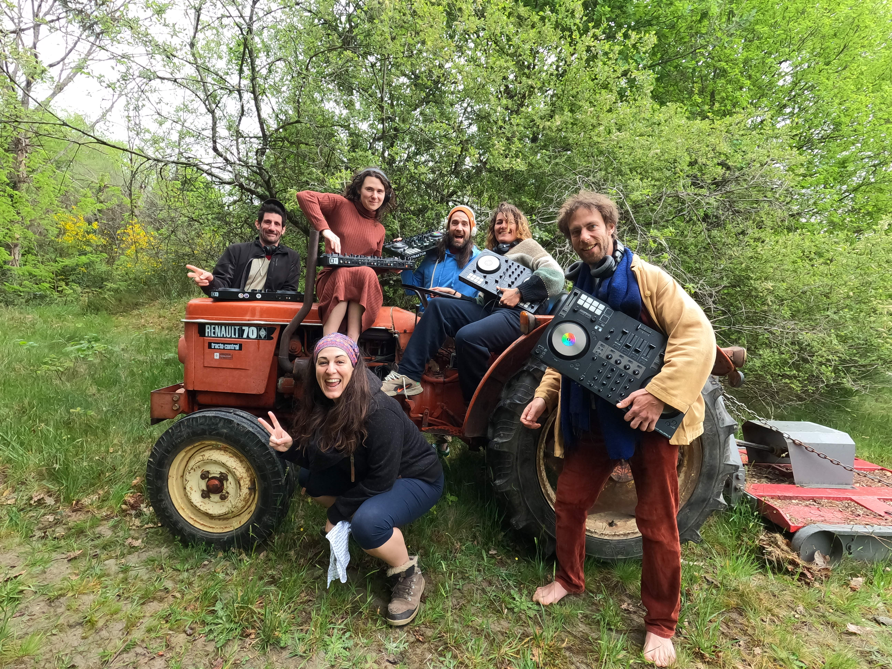
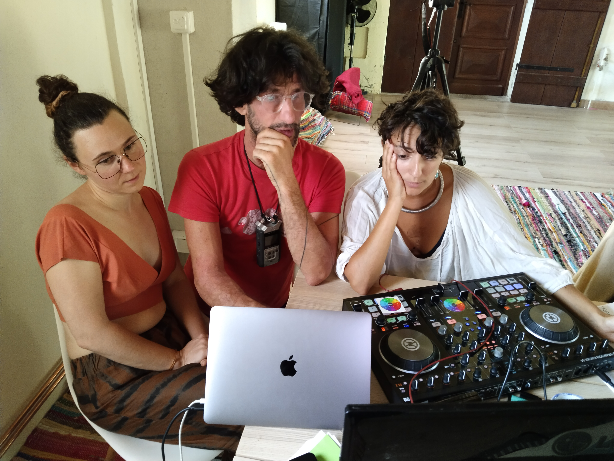
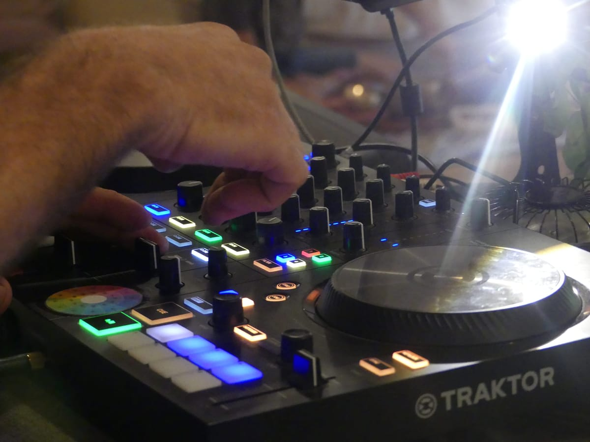
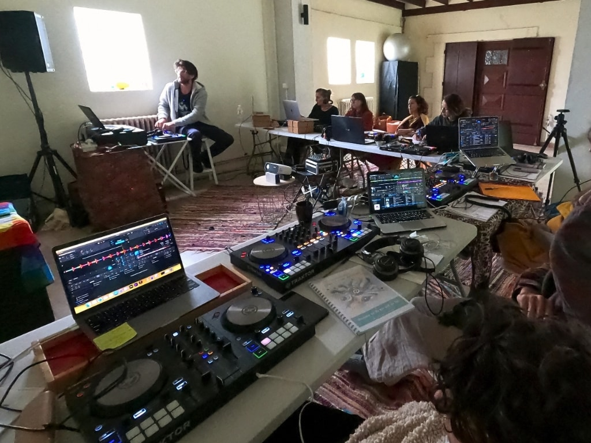
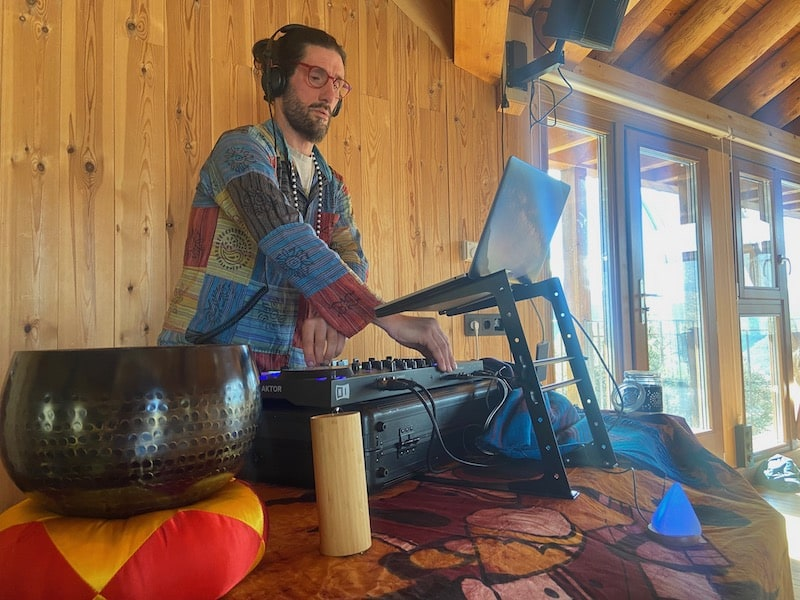

Crée des voyages qui transforment
Technique DJ, posture, présence et collectif —
pour devenir DJ holistique.
Pourquoi cette formation existe
Le DJing est une pratique vivante qui mêle musique, présence et responsabilité envers celles et ceux qui dansent. L'énergie y est présente à de multiples niveaux — dans le son, dans le corps, dans l'espace partagé.
L'Ecstatic Dance est une expérience de liberté par le mouvement, où chacun·e peut s'exprimer sans jugement ni chorégraphie imposée. Le·la DJ est un·e guide de voyage.
Son rôle : tenir l'espace, lire le groupe et faire évoluer l'énergie pour soutenir l'exploration intérieure et l'évolution de chaque danseur·euse.
Les formations DJ classiques enseignent la technique en oubliant l'essentiel : la posture, le cadre, la responsabilité de tenir un espace sûr et porteur. Ce manque produit des DJ techniquement capables et performants, mais qui peinent à créer une expérience réellement transformatrice.
Une nouvelle voie s'ouvre avec DJing Is A Medicine, créé pour combler cet espace. Une retraite-formation immersive de 5 jours, suivie d'un accompagnement de 6 mois minimum, qui relie technique DJ, conscience du mouvement et exploration intérieure.
Tu repars avec des compétences concrètes, une posture incarnée et la capacité de créer des voyages musicaux qui te ressemblent et qui font vraiment du bien.
Tu ressens l'appel mais tu ne sais pas par où commencer
Tu n'as encore jamais touché de contrôleur ou de platines, ou tu as très peu pratiqué. Pourtant, quelque chose t'appelle déjà dans la musique, le mouvement et l'envie de faire voyager. Tu sens qu'il y a là un espace d'expression pour toi, mais la technique te freine encore, et tu peux parfois douter de ta légitimité — et même te demander si c'est vraiment fait pour toi.
Ce niveau est fait pour toi si :
Tu veux apprendre à créer de vrais voyages musicaux, au-delà d'une simple playlist ou de ton application de streaming.
Tu cherches un cadre clair, humain et sécurisant pour avancer pas à pas, sans pression, tout en étant soutenu·e par un collectif.
Tu veux devenir DJ dans un environnement sain, sans logique de compétition ni culture des substances.
Ce programme s'adresse à celles et ceux qui souhaitent se former à la technique DJ tout en explorant leur posture, leur présence, leur monde intérieur et leur capacité à créer des espaces sûrs et connectés. Si l'exploration corporelle et intérieure ne résonne pas en toi pour l'instant, d'autres voies existent — suis ce qui te correspond vraiment.
Une transformation durable
✦ Bonus et autres surprises,
ce que tu découvriras en chemin ne se liste pas — ça se vit. ✦




Prérequis matériel
Viens avec ton ordinateur, ton contrôleur DJ et ton casque audio. Si tu n'es pas encore équipé·e, tout est prévu pour t'accompagner dans le choix du matériel adapté à ton projet et à ton budget.
Et après les 6 mois de Ronde (1) ?
Ronde est une fondation. À l'issue de ces 6 mois, tu sais où tu en es — et tu choisis la suite : approfondir dans Ronde, ou passer à Blanche. Il y a quatre niveaux en tout, chacun une étape sur le chemin.
Ce que tu vas apprendre
Mixer s'apprend. Sentir, aussi. Ce programme cultive les deux —
parce que l'un sans l'autre ne suffit pas à créer un vrai voyage.
Technique DJ
Maîtriser ton logiciel, ton contrôleur, ta bibliothèque musicale. Comprendre les bases du mix, les structures de morceaux, le câblage. Construire des sets qui racontent un voyage.

Posture & Présence
Développer ta capacité à ressentir l'énergie d'un groupe et à ajuster ta musique en conséquence. Méditation, Qi Gong, marches en conscience, exercices de respiration : des pratiques concrètes pour ancrer ta posture de DJ holistique.
Ces deux piliers s'alimentent mutuellement.
Ils et elles l'ont vécu
"Benjamin incarne l'expérience, la maîtrise et la patience d'un DJ conscient. Sa pédagogie est solide, concrète et complète. Le niveau technique proposé est très accessible tout en respectant le rythme de chacun. S'offrir ce stage est un cadeau que je me suis fait en écoutant mon intuition, et aujourd'hui je suis devenue DJ ecstatic, avec la joie au cœur de mixer devant notre belle communauté. Et la joie ne me quitte plus."
"J'ai pu développer ma pratique non seulement sur le volet technique, avec des règles essentielles du métier de DJ, mais aussi, et surtout, sur l'aspect de la posture. Les exercices qu'il propose permettent de se recentrer sur soi-même, d'être détendu dans son corps et à l'écoute des signaux que le public nous envoie. Après ce stage, je me suis senti libéré, confiant, et prêt à me lancer."
"Benjamin est un véritable pédagogue holistique. Ses retraites représentent une nouvelle façon d'apprendre en assimilant un savoir-faire et en intégrant en même temps un savoir-être. En se souciant autant de la technique que de la posture, de l'intention et de l'état d'esprit du DJ dans sa pratique, les élèves sont grandement nourris."
"Benjamin m'a transmis à la fois des outils concrets pour cultiver un état d'être présent et conscient derrière les platines et une connaissance approfondie du logiciel de mix Traktor. Les 6 mois de suivi après la formation m'ont permis d'organiser mes premiers événements d'Ecstatic Dance en me sentant soutenu et accompagné."